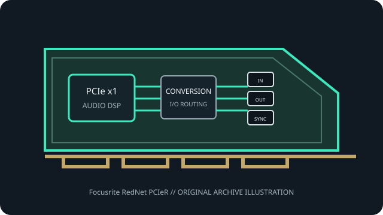

[ PROFESSIONAL AUDIO // PCIe ADD-IN ]
Focusrite RedNet PCIeR
A professional Dante network audio interface card for high-channel-count Windows and Intel-based Mac systems.

MODEL SCOPE: Focusrite RedNet PCIeR. Four-lane PCIe Dante interface with dual redundant network ports, up to 128×128 audio channels and ASIO/Core Audio drivers. Confirm PCB/IS revision, accessories, slot wiring and current vendor driver before installation.
Model-specific specifications
| Model-specific SKU | Focusrite RedNet PCIeR |
|---|---|
| Host interface / lanes | PCI Express x4 (standard four-lane card); Focusrite also supports installation in a compatible Thunderbolt expansion chassis. |
| Codec / conversion | Dante-over-IP transport only; no onboard analog ADC/DAC. Analog conversion is supplied by external RedNet or Dante endpoints. |
| Analog I/O | No analog audio connectors on the card. |
| Digital I/O / protocols | Two RJ45 Gigabit Ethernet ports for primary/secondary Dante network connections and automatic network redundancy; AES67 support. |
| Resolution / sample rates | 24-bit; 128×128 channels at 44.1/48/88.2/96 kHz and 64×64 at 176.4/192 kHz. |
| Latency / monitoring | Focusrite lists approximately 1.6 ms round trip at 96 kHz with RedNet analog I/O; actual network, endpoint and host buffer settings affect end-to-end latency. |
| Driver / OS compatibility | Focusrite RedNet ASIO (Windows) and Core Audio (macOS) drivers. Manufacturer specifies Intel-based Mac support and explicitly excludes Apple Silicon for PCIeR. |
Compatibility & preservation
Maintain separate primary/secondary networks for redundancy and match sample rate and clock master across Dante devices. PCIeR is not the newer PCIeNX; verify Intel Mac processor and current driver before selecting a host.
- Photograph the card label, PCB revision, rear connectors and included breakout cables before service.
- Retain the exact working driver, firmware, operating-system version, clock and routing configuration.
- Confirm lane wiring, bracket clearance, channel map and external converter/network compatibility; connector fit alone is not a compatibility guarantee.
Manufacturer sources
- Focusrite RedNet PCIeR — manufacturer product and specificationsManufacturer documentation for this model, driver family or revision.
- Focusrite RedNet PCIeR — official downloadsManufacturer documentation for this model, driver family or revision.